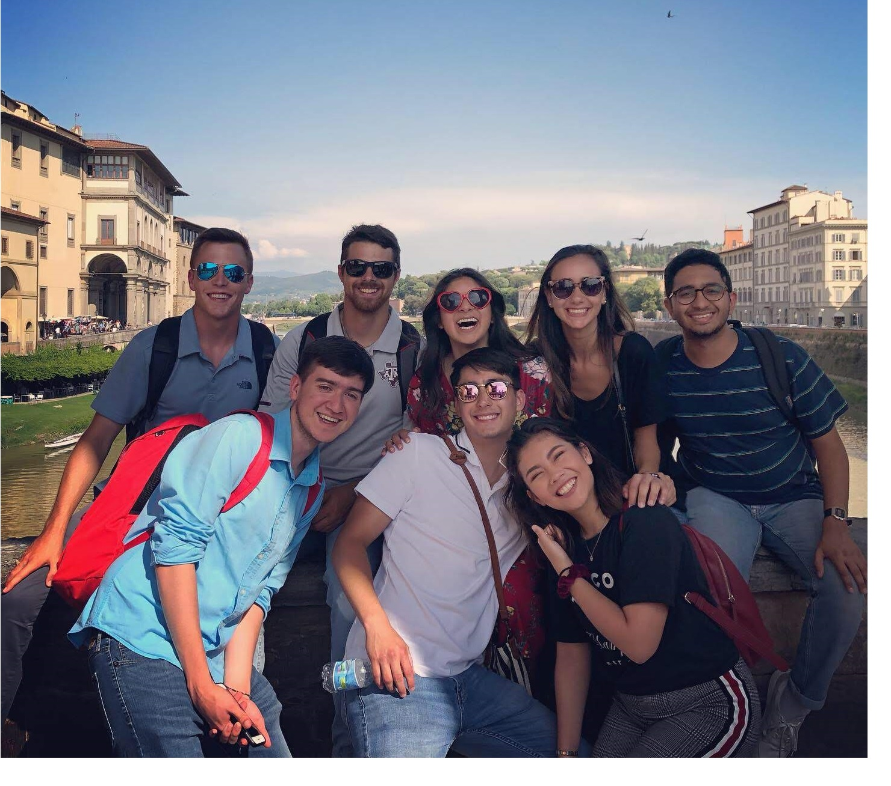
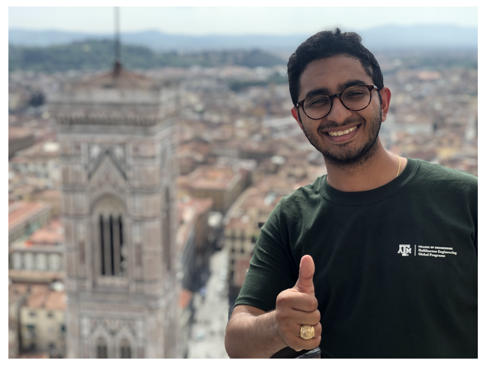
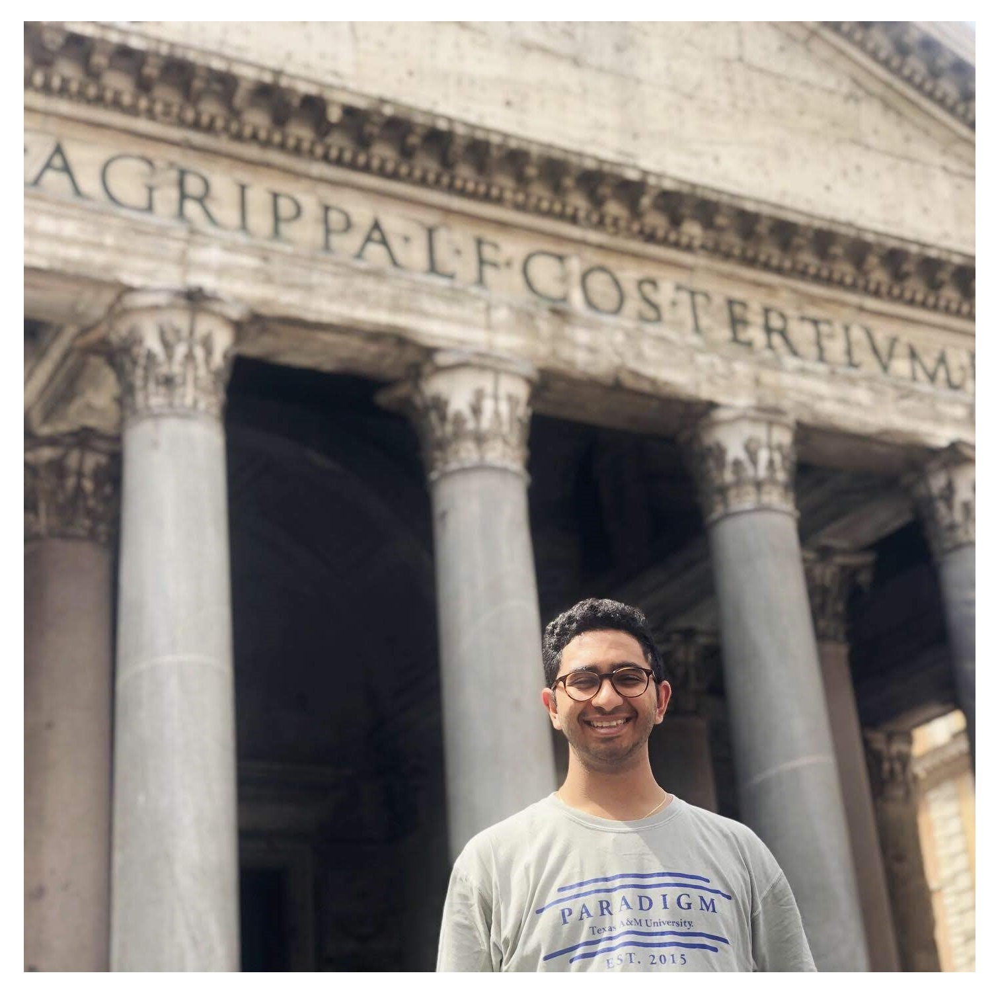
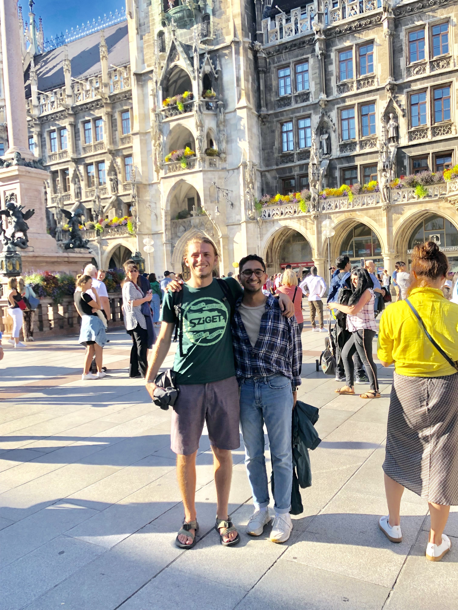

Welcome unknown
Over past 3 months, I've visited 4 different countries and countless cities. I've finely wined and dined with friends and alone. I've gone from being a student to a software developer, and in late August will become a student again.

 The Italian experience was incredible, it was so random at times that I can't even think through the days without looking at photos. The days were long and adventurous. The nights were calm and the students were not. On our first week, we were called out by the wives of the professors for having "a bit too much fun" on the roof with our disposable cups of wine. On weekdays we'd either have a tour or we would be in the classroom taking responsibility for our country by learning ethics. On the weekends however, adventure awaited as we dove into the unknown praying that our 1 hour planning and 4 hour train rides would take us to a new destination vacation. And while sometimes the train rides were longer than normal and the planning didn't seem to be well thought-out. It was in agreement that the company was always perfect.

After my time in Italy, it was time to get to work. I was given the opportunity (by a couple miracles up some sleeves) to intern in Germany with Siemens AG. Now I'm not too sure why this opportunity landed in my lap, but I have many people to thank and probably even bend down and kiss their feet, because this opportunity has been an unbelievable experience.
My German internship was a cultural immersion of no other. Its one thing to travel to a new country for vacation, but then you don't get to experience life just as the natives do! Living and working in Germany has let me experience the entirety of the German lifestyle. Waking up and packing onto a train packed with children laughing and working adults grumbling, learning the office slang and jargon, going to beer gardens after work to relax, walking around the main square at the end of the day just to buy a box of strawberries, and more. Its incredible to live so in parallel with a new culture, to do as others do. On weekdays I immersed myself into the Bavarian work life culture. But on the weekends I traveled and threw myself into as many other European cultures as I possible could. Being away from home in locations and countries where I ABSOLUTELY DO NOT speak the language has been a challenge, but its been a life changing challenge that’s given me wonderful new perspectives on life. I've forced myself good habits! I've also enjoyed my job so much, everyday at work I've encountered a new problem and I've never enjoyed problem solving so much. I've learned a ton about international business and the cultural similarities and differences between Germany and the United States.
Its been a fantastic experience and I honestly can't wait for my next visit back to the beer-gardens of Nuremberg.
So, what happens when you jump into the unknown? Is it scary? Do you feel alone? Is it exhilarating? Do you feel alive? Well yeah, honestly all of those things and more. The feeling of jumping into the unknown is almost impossible to describe. Thousands of emotions and feels ran through me as I attempted and completed this adventure. And after 3 months, with only 2 days left, I think I can describe it.